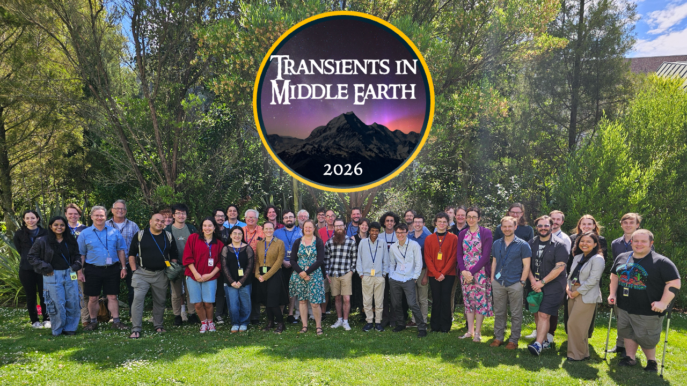
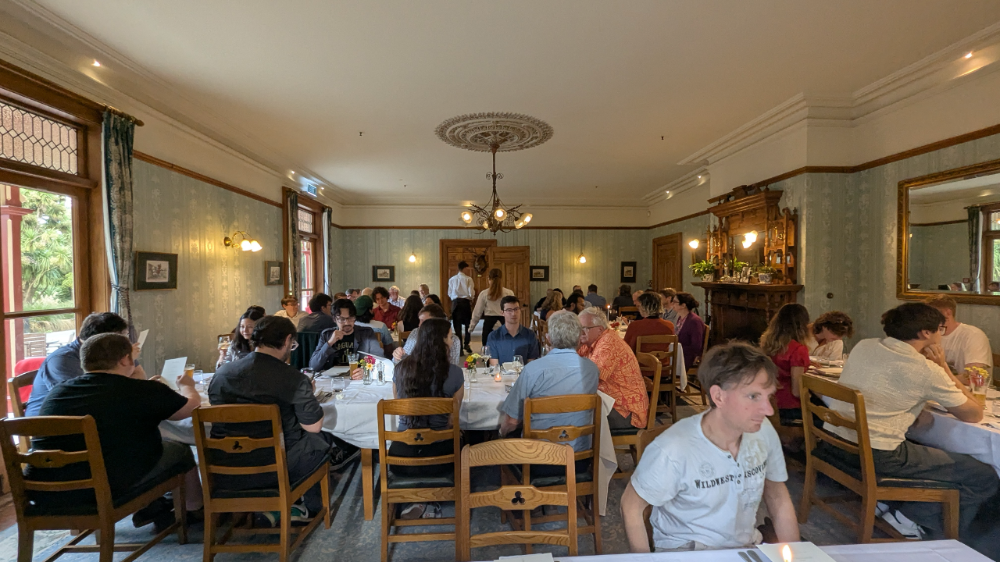
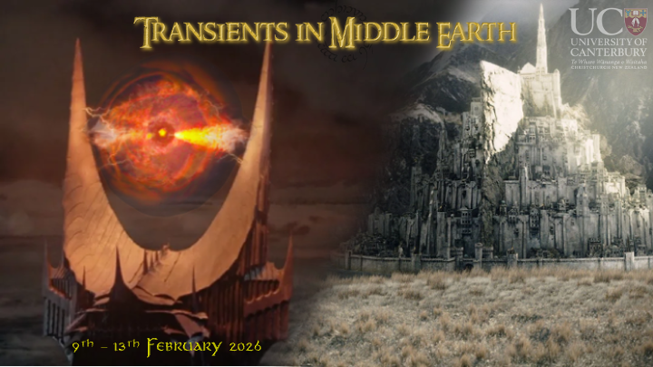

Building community around time-domain astrophysics in Aotearoa New Zealand — from single-group workshops to international conferences.



The first transient astronomy conference held in Aotearoa New Zealand, hosted by the School of Physical and Chemical Sciences at the University of Canterbury. Astronomers from across the world joined UC's transient astronomy group for two days of talks presenting discoveries from space telescopes and observatories worldwide.
The conference opened with a mihi whakatau followed by addresses from the Associate Dean (Research) and Deputy Vice-Chancellor Research. Day one focused on space telescope science — highlights included James Webb Space Telescope light-echo measurements of the historical supernova Cas A and the discovery of SN Eos, a core-collapse supernova when the Universe was just one billion years old. Day two covered ground-based astronomy and theory, with standout talks on the decade-long Deeper Wider Faster programme and AI pipelines for the Vera Rubin Observatory. UC students Zac Lane, Clarinda Montilla, Jaime Luisi, and Brayden Leicester gave excellent presentations on their world-leading research.
Distinguished Professor Brian Schmidt (2011 Nobel Prize in Physics) attended alongside a large delegation from the Space Telescope Science Institute. A conference dinner was held at Riccarton House and Bush, where Professor Jenni Adams and Associate Professor Gary Hill entertained guests with stories from the IceCube experiment at the South Pole. The conference excursion took a fellowship of astronomers to Mt Sunday — Edoras in The Lord of the Rings — followed by two days of working sessions that sparked new collaborations including a Roman Space Telescope proposal.